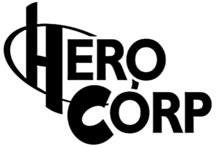

Présentation
Hero Corp est une série télévisée française fantastique et humoristique, produite par CALT, créée par Simon Astier et Alban Lenoir, réalisée par Simon Astier et écrite par Arnaud Joyet et Simon Astier.
Les deux premières saisons ont été diffusées du 25 octobre 2008 au 29 janvier 2010 sur Comédie+ et rediffusées sur France 4 et Game One. La troisième saison a été diffusée sur France 4 du 21 octobre 2013 au 6 décembre 2013. La quatrième saison a été, quant à elle, diffusée du 19 décembre 2014 au 23 janvier 2015 sur France 4 et à partir du 9 février 2015 sur Game One. Une cinquième et dernière saison a été diffusée sur France 4 du 24 mai 2017 au 7 juin 2013.
Synopsis
À la suite d’une guerre dans les années 1980, il est décidé de créer l’agence Hero Corp, une organisation regroupant tous les super-héros afin de maintenir un climat de paix. Cette agence possède plusieurs sites secrets sur la planète et dans le département de la Lozère se trouvent les retraités, mis au rancart, démissionnaires, démasqués, pas-formés. Coupés du monde, ils peuvent retrouver une vie calme et paisible. Vingt ans après, ce calme paisible vole en éclats lorsque réapparaît The Lord.
Face au retour de The Lord, le plus grand super-vilain de l’Histoire, le village est démuni. Selon une prédiction, John est l'unique solution face à ce danger que Hero Corp préfère garder sous silence.
John arrive dans un village isolé pour aller enterrer sa tante. Il se rend compte que les habitants cachent quelque chose et qu’ils n’ont pas l’air décidés à le laisser partir.